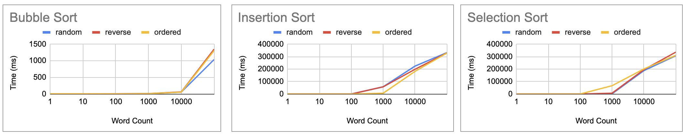

Sort Analysis
Bubble Sort Repository Insertion Sort Repository Selection Sort Repository
Sort Analysis
Sophia P. Tran
Allen ISD STEAM Center
Advanced Computer Science II
Mr. Ben-Yaakov
October 7, 2022
Sort Analysis
These three graphs portray the effectiveness of the three sorts: bubble sort, insertion sort, and selection sort. In this project, I was tasked with finding the quickest algorithm to sort a list of words. To do so, I ran each sort through a variety of tests to keep this project as accurate as possible. I used each sort to alphabetically sort lists that were ordered, reverse ordered, and random. Furthermore, each type had lists of one word, ten words, one hundred words, one thousand words, ten thousand words, and one hundred thousand words. I ran each list five times through each sort, timing them to see which was the fastest. The results from these tests can be seen on the spreadsheet along with the three graphs.
Bubble Sort
The first algorithm I tested was bubble sort. The results of these trials are seen in the first graph. Bubble sort works by comparing two elements at a time, switching them if the element on the right is less than the element on the left.
Insertion Sort
The second algorithm I tested was insertion sort. The results of these trials are seen in the second graph. Insertion sort works similarly to bubble sort, with the exception of only looking at one element at a time.
Selection Sort
The third and final algorithm I tested was selection sort. The results of these trials are seen in the third graph. Selection sort works by finding the smallest element in the list and switching it to the front.
Conclusion
In all sorts, all lists with one word and ten words were very similar, each being about five milliseconds. In addition to this, all three graphs were also similar in the fact that they all grew exponentially, taking more time with the more words sorted. With this being said, the fastest sort was bubble sort. When sorting one hundred thousand words, bubble sort took about one thousand milliseconds while insertion sort and selection sort took about three hundred thousand milliseconds. Overall, these graphs were able to display the time each sort took, with bubble sort generally taking the shortest amount of time.
Optimal Sorting
People Who Contributed: Zachary Chandler, Devon Leerssen, Sophia Tran, and Preston Nguyen
Flowchart